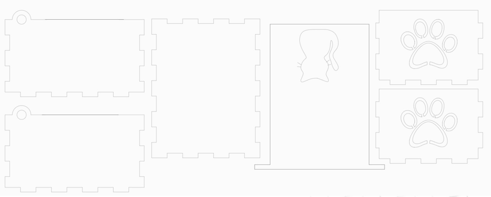
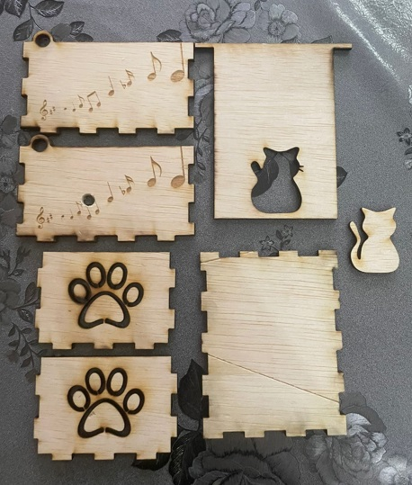

For one of our assignments, we were tasked to create a music box using laser cutting technology. First, we sketched the base along with two faces (front & side) of the box, and then extruded it by 3mm. The 2 faces were then copied and pasted to create the other half of the box. The left and right sides were designed with a hole, that had a diameter 6mm, towards the top edge so that the lid could be held in place. The lid was the final piece to be sketched and extruded with two 10mm protrusions at the left and right sides. This was so the lid would be able to fit into the holes added to the left and right faces of the box. The lid was also designed to be longer than the box itself so that it could be lifted up with ease. The dimensions of the box were 90mm x 70mm x 50mm.
Here is how the final design looked like.
I then proceeded to save each of the faces as sketches and saved them as DXF files. The DXF files were imported on Inkscape in order to edit the vector designs. This is the finalised vector.
The finalised vector was saved as an SVG file and exported to CorelDRAW before cutting. During the editing process, I decided to add a simple music note design to be engraved onto the sides of the boxes. However, I made a mistake of not inverting the side piece before printing, so one of the engraved sides ended up being on the interior of the box. I ended up recutting the side so that the engraving would be on the exterior of the box instead. The cutting power and speed were 70% and 30% respectively, while the engraving power and speed were 20% and 100% respectively. Here are the final pieces after cutting, along with a video of the cutting process.
A hole of 5mm diameter was drilled onto the side piece (right) of the box so that the music box handle would fit through. The music box was glued onto the base, then the remaining pieces were assembled and glued as well. The lid was connected to the box before gluing on the final side piece so that its protrusions can be slotted into the side piece holes first.
Here are some pictures of the final product. :)